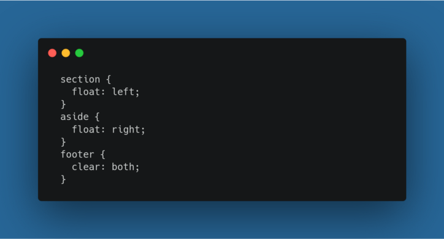

Tema 2: Flexbox
El proposito de este sitio es mostrar el uso de Flexbox con css, el uso de listas y de enlaces
Antes de flexbox
Como lo explica Jin(2017) En los principios de CSS era bastante común ver la el uso de la propiedad float en los archivos style.css, propiedad que fue utilizada para crear disposiciones de elementos habiendo texto o no involucrado. Esto apesar de fue creada para determinar si un elemento debe salir del flujo normal y situarse a la izquierda o derecha del contenido.
Definición formal de flexbox
Attardi J.(2020) define a Flexbox como un módulo de diseño de caja flexible, flexbox es su abreviación y la forma en como es mayormente conocido. Es una herramienta poderosa para crear diseños con CSS. No es tan poderoso como CSS Grid, pero puede resolver muchos problemas de diseño. Flexbox es un diseño unidimensional que puede colocar elementos horizontal o verticalmente (pero no ambos). Un elemento que usa flexbox como diseño se conoce como contenedor flexible, y los elementos dentro de él son elementos flexibles.

Fuente: Ichipro.com - Introducción a float-css
Flexbox es un módulo de diseño de CSS3 que fue creado para mejorar la manera de hacer diseño resposivo, evitando así el uso de float, escribiendo menos código y facilitando el posicionamiento de elementos, incluso no teniendo noción del tamaño de éstos. Básicamente la idea de Flexbox es poder alterar el ancho, alto y posicionamiento de elementos de la mejor manera con el espacio del que disponemos.
Cada Elemento-Flex está definido por sus dimensiones, anchura(tamaño principal) y altura(tamaño secundario) que dependen del eje principal y el eje secundario.

Referencias bibliograficas
-
Attardi, J. (2020). Flexbox. In Modern CSS (pp. 205-228). Apress, Berkeley, CA..
-
Prescott, P. (2015). HTML 5. Babelcube Inc..
-
Luján-Mora, S. (2013). iDESWEB: HTML: enlaces. iDESWEB.
-
Jin, K. H. (2017, September). Teaching Responsive Web Design to Novice Learners. In Proceedings of the 18th Annual Conference on Information Technology Education (pp. 115-120).